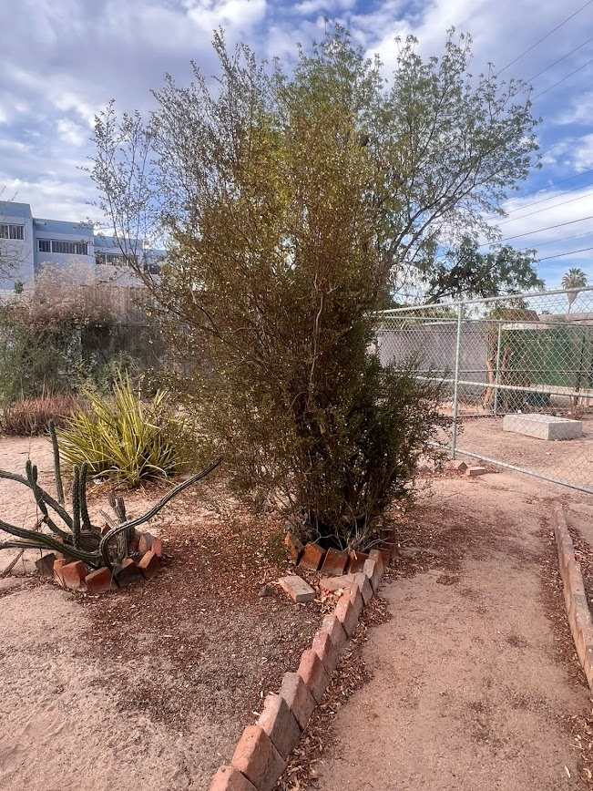
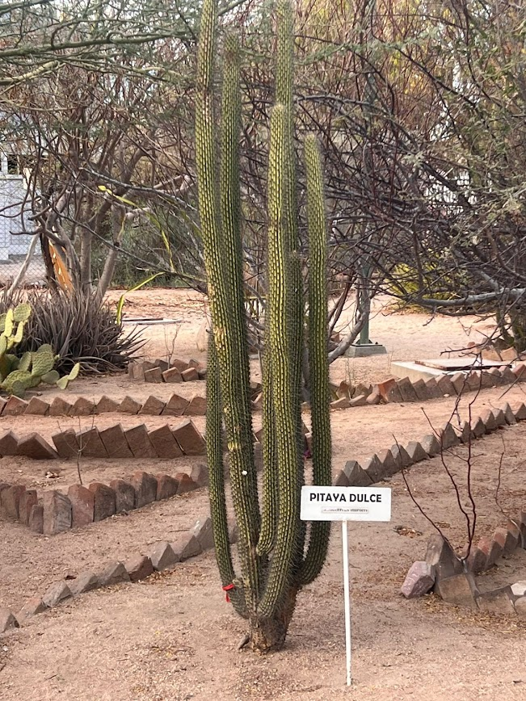
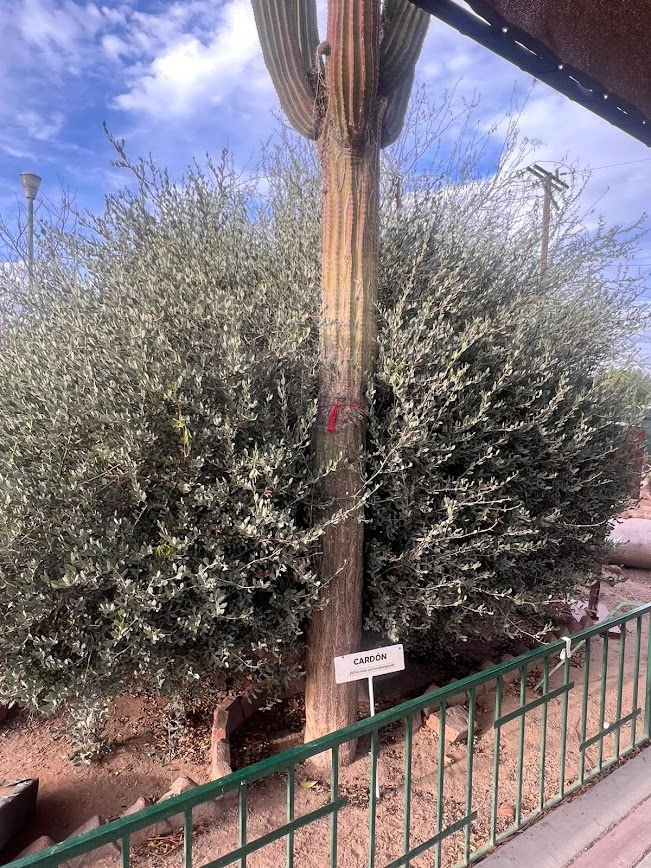
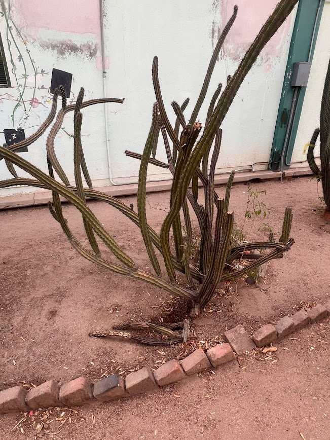
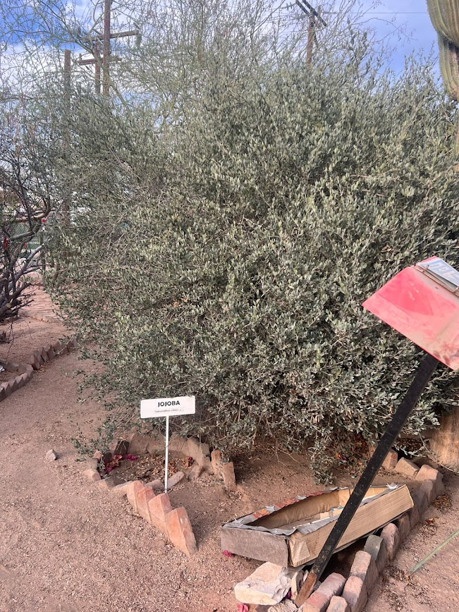
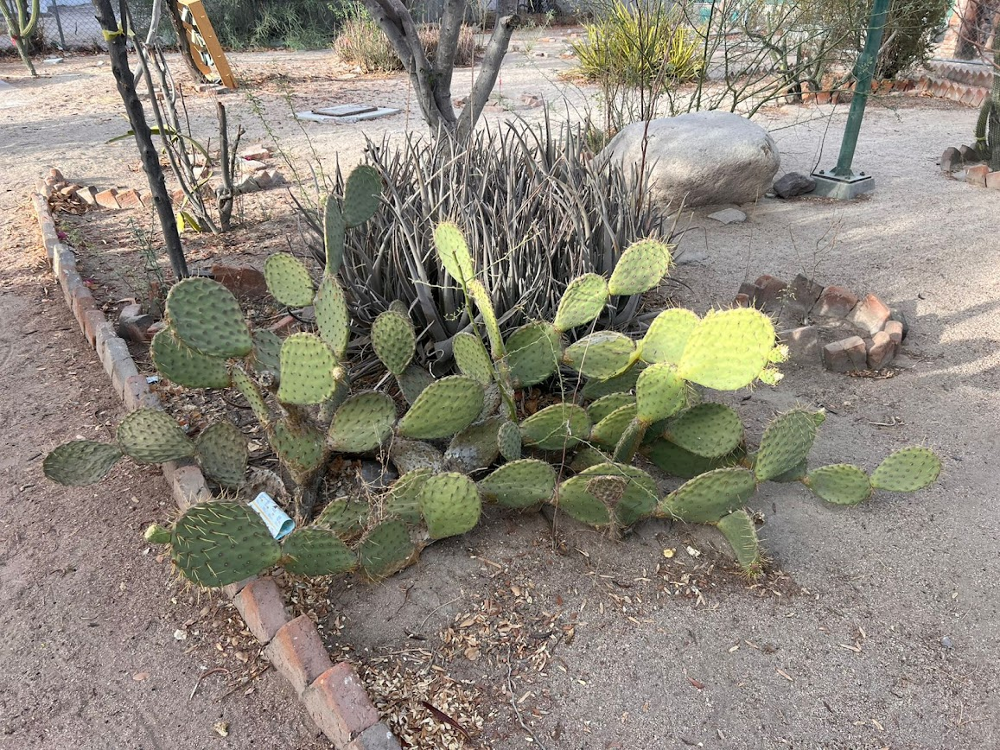

La Gobernadora (Larrea tridentata) es un arbusto sumamente resistente y emblemático de las zonas desérticas de México. Es famosa porque sus hojas están cubiertas de una resina que despide un olor muy fuerte y característico, conocido popularmente como el "olor a lluvia" del desierto.

La Pitaya Dulce (nombre científico: Stenocereus thurberi) es una cactácea columnar nativa de las zonas áridas del noroeste de México, especialmente emblemática de la península de Baja California y Sonora. Se caracteriza por crecer en forma de candelabro, desarrollando múltiples brazos verticales que nacen desde una base común y corta a nivel del suelo.

El Cardón (nombre científico: Pachycereus pringlei) es la especie de cactus más alta del mundo, capaz de alcanzar hasta 20 metros de altura y vivir por cientos de años. Es una planta endémica y sumamente emblemática del noroeste de México, con una presencia masiva y espectacular en la península de Baja California y Sonora.

La Pitaya Agria (Stenocereus gummosus) es una cactácea arbustiva y muy ramificada endémica de la península de Baja California y las islas del Golfo de California. A diferencia de las cactáceas columnares altas, sus brazos delgados y espinosos crecen de forma arqueada, inclinándose con frecuencia hacia el suelo o postrándose en él.

La Jojoba (Simmondsia chinensis) es un arbusto perenne, leñoso y muy ramificado, nativo de los desiertos de Sonora y Baja California. Es sumamente resistente a las sequías extremas y al calor debido a sus hojas ovaladas, gruesas y de un tono verde grisáceo, las cuales están cubiertas por una capa cerosa que evita la pérdida de agua.

El Nopal (Opuntia) es una de las cactáceas más representativas, abundantes y con mayor importancia cultural en México. Se caracteriza por sus tallos planos y ovalados en forma de paletas, llamados cladodios o pencas, los cuales están cubiertos de espinas y cumplen la función de almacenar grandes cantidades de agua para resistir las sequías del desierto.

Copal Blanco (Bursera microphylla) Es un árbol pequeño o arbusto aromático nativo de las regiones áridas de Sonora y la península de Baja California, también conocido como torote blanco. Se caracteriza por su tronco grueso y ramas retorcidas de corteza clara que se exfolia (se desprende en finas capas) y por producir una resina con un olor muy agradable y penetrante que ha sido usada desde la antigüedad como incienso y en la medicina tradicional. Es sumamente resistente a la escasez de agua, perdiendo sus hojas compuestas durante las temporadas secas para evitar la deshidratación.
Video informativo del sendero escolar y las especies presentes en el Plantel 01.